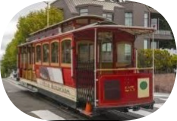

Bem Vindo ao San Francisco
Como chegar em San Francisco?
Não há voos diretos para San Francisco e a melhor forma de voar para a cidade é o voo da Copa Airlines via Panamá. Outras boas pedidas são voos via Texas (American ou United).
Voos via Miami, Nova York ou Atlanta costumam ser um pouco mais baratos porém bem mais longos. Vale pensar se a equação fecha para você, eu evito.
Dicas de hospedagem em San Francisco
Union Square
A região da Union Square é o burburinho comercial da cidade, uma região bem localizada e muito bem conectada com as principais linhas de transporte público
Fisherman’s Wharf
Coladinha no Píer 39, a região do Fisherman’s Wharf é o bairro mais turístico de SF, uma região conectada ao centro pela linha F do Muni e pelo Cable Car (o bondinho de San Francisco).

Transporte: Como andar por San Francisco
Alugar carro em San Francisco não vale a pena, sério. Além do trânsito carregado e regrinhas chatas que podem fácil te render uma multa (ou um carro guinchado), dirigir em San Francisco é caro. Os hotéis cobram entre $30 – $70 dólares por dia de estacionamento.
Quer outro bom motivo para não alugar carro?
O transporte público em San Francisco está entre os melhores dos EUA, é fácil de usar e você ainda pode optar por passes de transporte ou cartões de desconto como SF CityPASS.